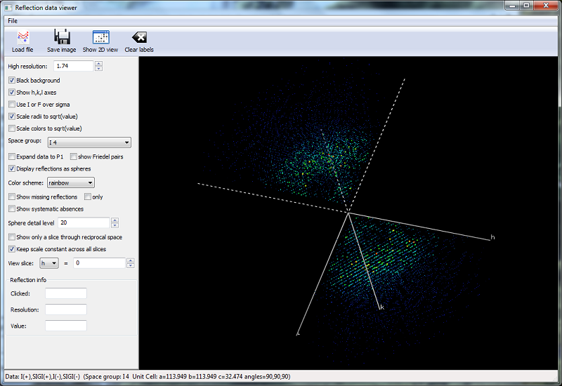
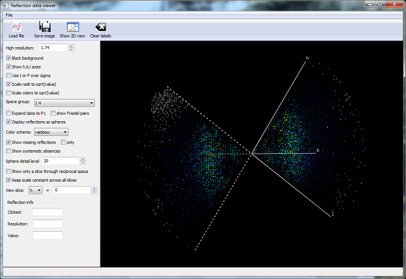
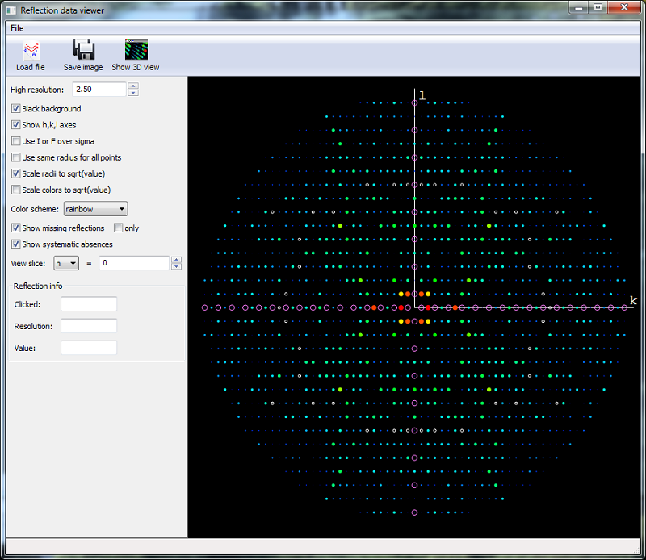

The program phenix.data_viewer is used to explore data in reciprocal space, as a diagnostic and learning tool. Although reciprocal space is largely an imaginary construct, it is a convenient way to describe the geometry of diffraction and data collection. Two different rendering methods are provided: a 3D view of all of reciprocal space at once, and a 2D view of planes of reflections, or "pseudo-precession photographs". These are largely complementary, although certain visualizations may be easier in one or the other view.
phenix.data_viewer can be launched from the GUI, under "Reflection tools", where the 2D and 3D versions are listed separately, or directly from the command line, which initially starts the 3D version. OpenGL support (and ideally a reasonably fast graphics card) is required for the 3D graphics; for this reason, we do not recommend running the 3D viewer over an X11 connection. Once the program opens it will ask you to select a reflections file, which depending on contents may prompt you to choose an array of data. Currently any array which includes amplitudes or intensities (including map coefficients) can be viewed, as well as phase angles and R-free flags. However, the examples shown here all use amplitudes or intensities.
For most reflections files, the data will fill some portion of a sphere, whose radius is one divided by the maximum resolution. Depending on space group symmetry and whether the data are symmetry-unique, usually only a wedge of data will be shown. If the data are anomalous this wedge will be mirrored across the origin. For instance, the intensity data for the p9-sad tutorial (included with Phenix) will appear like this:

In this case the space group is I4 with anomalous data, so the symmetry-unique reflections fill two 90-degree wedges of reciprocal space. Identifying features in the data is left as an exercise to the user; however, in this case (and many others) the characteristic distribution of intensities seen in the Wilson plot in Xtriage is very obvious: relatively high intensities at low resolution (at the center of the sphere), decreasing rapidly above approximately 10 Angstrom, with a large increase in mean intensity around 4-5 Angstrom due to characteristic inter-atomic distances in organic (especially macromolecular) structures. Clicking on any individual reflection will show the h,k,l index, resolution, and value in the box on the lower-left corner.
The view can be manipulated with the controls on the left-hand side of the window; this includes the option to change the symmetry or generate anomalous data if not are present in the input file. A particularly useful option is to show reflections that are missing. These will appear as white spheres:

Most datasets will have at least a handful of these at high resolution, and often the innermost low-resolution reflections will also be absent due to beamstop overlap. In this case a large contiguous region of missing data is visible for one of the quadrants; this is probably caused by imperfect orientation of the crystal during data collection. For this dataset the number of missing reflections is relatively small and because of the overall excellent quality, no impact on phasing, refinement, or map quality is observed. However, poor completeness can often lead to problems at various stages of refinement, especially if large regions of reciprocal space are systematically missing.
The 2D view handles symmetry-unique data differently than the 3D version: it will always expand these data to P1 and generate anomalous pairs, covering all of reciprocal space. (For non-unique data, only those reflections present in the input file will be displayed.) This will result in a view something like this (here using the rnase-s tutorial):

In this example both missing reflections (small white open circles) and systematic absences (large purple open circles) are also displayed. The distribution of values is different than observed for the p9-sad example, partly because amplitudes are displayed instead of intensities, and partly because the data were probably not collected or processed to the maximum resolution possible for this crystal.